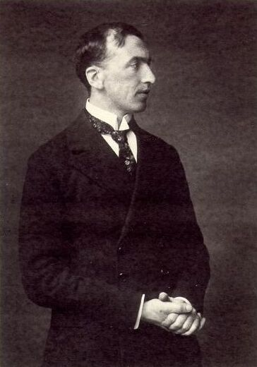
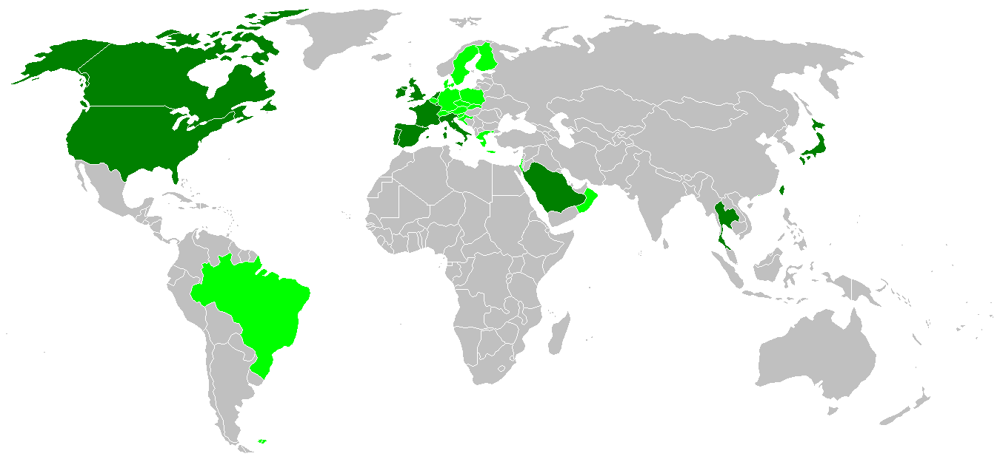
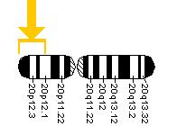

Не следует путать с коровьим бешенством — прионным заболеванием крупного рогатого скота.
Болезнь Кре́йтцфельдта — Я́коба (или Болезнь Кройцфе́льдта — Я́коба; синонимы: псевдосклероз спастический, синдром кортико-стриоспинальной дегенерации, трансмиссивная спонгиоформная энцефалопатия, иногда ошибочно называемая «коровьим бешенством») — редкое прогрессирующее прионное нейродегенеративное заболевание коры большого мозга, базальных ганглиев и спинного мозга. Считается разновидностью губчатой энцефалопатии (группы заболеваний, вызываемых особыми инфекционными агентами — прионами). На сегодняшний день заболевание неизлечимо, летальный исход наступает в 100 % случаев. Доступно только симптоматическое лечение, не влияющее на прогрессирование болезни. Диагностика заболевания затруднена из-за его редкости и отсутствия специфических симптомов.
История

Заболевание впервые описано в 1920 году Гансом Герхардом Крейцфельдтом. В 1921 году Альфонс Якоб отметил сочетание при этой патологии психических нарушений с симптомами поражения передних рогов спинного мозга, экстрапирамидной и пирамидной системы, и определил заболевание как спастический псевдосклероз или энцефалопатию с рассеянными очагами поражения ткани мозга. Шпильмейер предложил называть болезнь по имени авторов, впервые описавших её.
Эпидемиология
Болезнь Крейцфельдта — Якоба составляет около 85 % всех прионных энцефалопатий человека, поражает людей всех национальностей и рас, мужчин и женщин, взрослых и детей. Отмечается некоторое преобладание частоты случаев болезни куру у женщин-аборигенов острова Новой Гвинеи, что связывают с особенностями национальных традиций (ритуального каннибализма), когда женщины поедают мозг умерших и получают высокую дозу PrPSc. Начало заболевания наступает, как правило, в среднем или позднем возрасте, в типичных случаях на пятом десятке жизни, но в принципе может возникнуть в любом возрасте. Возраст дебюта классической формы — от 17 до 87 лет (средний возраст — 64 года), средний возраст новой формы — 29 лет.

Этиология, патогенез и пути заражения
См. также: Прионная болезнь
1.Попадая в организм, прион оседает на поверхности клетки, взаимодействуя с нормальными белками и изменяя их структуру на патологическую.
2.Накапливающиеся на поверхности клетки патологические белки блокируют процессы, происходящие на мембране, что приводит к гибели клетки.
3.Накапливающиеся на поверхности клетки белки запускают апоптоз (запрограммированный процесс смерти клетки).
4.Клетка, стараясь избавиться от белков на поверхности, начинает производить активные кислородные соединения, однако белок на поверхности не даёт им выйти за пределы клетки. Активные вещества разрушают саму клетку.
5.Вокруг поражённых клеток начинается воспаление с участием высокоактивных ферментов, поражающих соседние здоровые клетки.
Формы болезни Крейтцфельдта — Якоба
Спонтанная — классическая (sCJD)
Согласно современным представлениям (прионной теории), прионы при этой форме заболевания возникают в мозге спонтанно, без какой-либо видимой внешней причины. Болезнь обычно поражает людей в возрасте старше 50 лет и проявляется с вероятностью 1—2 случая на миллион жителей. Вначале проявляется в форме кратких потерь памяти, изменениями настроения, потерей интереса к происходящему вокруг. Больной постепенно перестаёт осиливать и текущие действия, связанные с повседневной жизнью. В конечной фазе наступает расстройство зрения, галлюцинации и расстройство речи (особенная медленная речь).
Основные характеристики:
· около 40 % больных со спорадической формой имеют подострое течение с прогрессирующими когнитивными нарушениями, в 40 % случаев встречаются мозжечковые нарушения, в 20 % — их комбинация.
· клиническая картина включает расстройства поведения, нарушения высших корковых функций, корковые нарушения зрения (вплоть до корковой слепоты), мозжечковую дисфункцию, сочетание пирамидной и экстрапирамидной симптоматики.
· эпилептические припадки — практически у всех больных развиваются фокальные, в том числе миоклонус века, миоклонус губы и/или вторично-генерализованные миоклонические припадки, которые могут провоцироваться фоно- и фотостимуляцией, тактильным раздражением (прикосновением). У большинства больных во время ЭЭГ-исследования выявляются характерные периодические или псевдопериодические пароксизмы острых волн и/или спайков на общем замедленном низкоамплитудном фоне биоэлектрической активности головного мозга.
В терминальной стадии — глобальные выраженные когнитивные нарушения, летальный исход через 8 месяцев от дебюта заболевания.
Наследственная (fCJD)
Болезнь возникает в семьях, где наследуется повреждение гена для прионового белка. Дефектный прионовый белок является намного более подверженным спонтанному превращению в прион. Признаки и ход болезни подобны классической форме.

Ятрогенная (iCJD)
Болезнь обусловлена непреднамеренным внесением прионов в тело пациента при медицинском вмешательстве. Источником прионов ранее были некоторые лекарства, инструменты или мозговые оболочки, которые забирались у мёртвых людей и использовались для закрытия раны при операциях на мозге. Сегодня этот источник заражения полностью устранён. Признаки и ход болезни подобны классической форме.
Новый вариант (nvCJD)
Болезнь впервые выявлена в 1986 году в Великобритании, и с того момента до 2009 года от неё умерло не менее 200 человек. Вероятнее всего, что заболевшие заразились мясными продуктами, содержащими бычьи прионы из мозга «бешеных коров». В отличие от «классической» формы, болезнь поражает и молодых людей в возрасте около 20 лет. В первую очередь она проявляется в изменении личности. Люди теряют интерес к своему хобби, сторонятся своих самых близких людей, поддаются депрессиям. Далее следует похудение, нарушение координации движений. Пациент не способен сам о себе позаботиться, не соблюдает основные правила гигиены, не может без чужой помощи поесть. Повреждение мозга всё больше и больше нарушает основные жизненные функции, и, наконец, пациент умирает. В отличие от классической формы, при новом варианте болезни Крейцфельдта — Якоба отдалено наступление слабоумия, и пациент очень долго осознаёт своё ухудшающееся состояние.
Основные характеристики:
· психические расстройства и сенсорные нарушения;
· характерны глобальные когнитивные нарушения и атаксия;
· описано несколько случаев заболевания, дебютировавшего с корковой слепотой (вариант Heidenhain);
· эписиндром представлен также миоклоническими припадками;
· мозжечковая симптоматика выявляется в 100 %.
Клиника
Клиническими критериями деменции при болезни Крейцфельдта — Якоба (БКЯ) являются:
· быстро прогрессирующая — в течение 2 лет — («опустошающая») деменция с дезинтеграцией всех высших корковых функций; пирамидные нарушения (спастические[6] парезы (снижение силы мышц));
· экстрапирамидные нарушения (хореоатетоз);
· миоклонус (непроизвольные сокращения мышц);
· атаксия (нарушение согласованности движений различных мышц), акинетический мутизм (утрата способности говорить и двигаться);
· дизартрия (нарушение произношения);
· эпилептические припадки;
· зрительные нарушения (диплопия)
Стадии заболевания:
1. Продромальный период — симптомы неспецифичны и возникают примерно у 30 % больных. Они появляются за недели и месяцы до возникновения первых признаков деменции и включают астению, нарушения сна и аппетита, внимания, памяти и мышления, снижение массы тела, потерю либидо, изменение поведения.
2. Инициальный период — для первых признаков заболевания обычно характерны зрительные нарушения, головные боли, головокружение, неустойчивость и парестезии. У основной части больных болезнь развивается постепенно, реже — острый или подострый дебют. В некоторых случаях, как при так называемых амиотрофических формах, неврологические знаки могут предшествовать началу деменции.
3. Развёрнутый период — обычно отмечается прогрессирующий спастический паралич конечностей с сопутствующими экстрапирамидными знаками, тремором, ригидностью и характерными движениями. В других случаях может отмечаться атаксия, падение зрения или мышечная фибрилляция и атрофия верхнего двигательного нейрона.
Для спорадической БКЯ характерны:
Терминальный период — тяжёлая деменция вплоть до маразма. Все прионозы — быстро прогрессирующие заболевания. Течение может быть подострым, но обычно приводит к смерти не более чем через 1—2 года от момента чётко очерченной клинической манифестации. Средняя длительность спорадической формы болезни — около 8 месяцев. Длительность новой формы больше и достигает в среднем 16 месяцев. Средняя длительность наследственной формы — 26 месяцев.
Диагностика
БКЯ должна предполагаться во всех случаях деменций, которые прогрессируют быстро в течение месяцев или 1—2 лет и сопровождаются множественными неврологическими симптомами.
Определённая БКЯ:
· Характерная неврологическая и морфологическая, в том числе патолого-анатомическая и нейрорадиологическая симптоматика.
· Протеазорезистентный PrP (по данным Western-блоттинга).
· Выявление скрепи-ассоциированных фибрилл.
Вероятная БКЯ:
Прогрессирующая деменция.
· Характерный ЭЭГ-паттерн (для спорадической БКЯ).
· По крайней мере, 2 признака из нижеперечисленных:
· миоклонус;
· ухудшение зрения;
· мозжечковая симптоматика;
· пирамидные или экстрапирамидные симптомы;
· акинетический мутизм.
Возможная БКЯ:
· Прогрессирующая деменция.
· Нетипичные изменения на ЭЭГ (или ЭЭГ провести невозможно).
· По крайней мере, 2 признака из нижеперечисленных:
· миоклонус;
· ухудшение зрения;
· мозжечковая симптоматика;
· пирамидные или экстрапирамидные симптомы;
· акинетический мутизм.
· Продолжительность заболевания — менее 2 лет.
Из параклинических методов диагностики БКЯ наиболее информативными являются:
· характерные данные магнитно-резонансной томографии (МРТ) головного мозга (особенно на поздних стадиях развития заболевания) в виде билатеральных гиперинтенсивных сигналов на Т2-взвешенных изображениях (симптом «медовых сот»), преимущественно в области хвостатых ядер (в области головки), подушки главным образом таламуса; показано, что симптом «медовых сот» наиболее характерен для нвБКЯ; могут выявляться признаки атрофии коры больших полушарий и мозжечка;
· позитронно-эмиссионная томография (Позитронно-эмиссионная томография) менее информативна, выявляются множественные зоны гипометаболизма глюкозы на уровне подкорковых ядер и коры больших полушарий и полушарий мозжечка;
· для спорадической БКЯ характерно выявление на ЭЭГ трёхфазной активности, ранняя пароксизмальная активность обычно диагностируется через 12 нед. и более от дебюта спорадической БКЯ (у 80—88 % больных); фокальная, билатеральная и генерализованная миоклоническая пароксизмальная активность диагностируется в 15, 53 и 100 % случаев при продромальной, начальной и терминальной стадиях БКЯ соответственно; могут регистрироваться различные виды периодической пароксизмальной активности: двухфазные или трёхфазные периодические комплексы, возникающие каждые 1—2 с; периодические комплексы с мультифазной конфигурацией; периодические полиспайковые разряды. ЭЭГ-паттерн «вспышка-подавление» характерен для терминальной стадии заболевания с явлениями декортикации;
· для новой формы выше описанные изменения ЭЭГ не характерны, ЭЭГ-паттерн может значимо не меняться по сравнению с возрастной нормой;
· результаты тестирования когнитивных функций (например, менее 24 баллов по краткой шкале MMSE);
· анализ ликвора (люмбальная пункция должна проводиться во всех случаях заболевания), учитываются давление ликвора, уровень сахара, цитоз, наличие бактериальных и вирусных культур, криптококкового антигена и др.; может быть небольшое повышение уровня белка (но не более 100 мг/дл); важным диагностическим критерием является уровень маркера в ликворе — чувствительность и специфичность этого теста превышает 90 %;
· если диагноз неясен, то возможно проведение прижизненной биопсии мозга (при наличии информированного согласия со стороны родственников или опекунов в случае недееспособности пациента);
· морфологическое и гистологическое исследование тканей головного мозга (коры, подкорковых ядер) при аутопсии (посмертная диагностика).
Случаи ятропатии
Во Франции множество случаев болезни Крейтцфельдта — Якоба было вызвано у детей из-за ошибок врачей (зафиксировано не менее 200 случаев). Медики вводили отстающим в росте детям препараты гипофиза животных, больных губчатой энцефалопатией крупного рогатого скота. Впоследствии судом медицинские работники были полностью оправданы.
Лечение
Этиотропной терапии нет. Проводится симптоматическое лечение. При выявлении БКЯ необходимо отменить все лекарственные препараты, которые могут негативно влиять на мнестические функции и поведение пациента. Множество потенциальных терапевтических вмешательств при БКЯ остаются в настоящее время на уровне дискуссии. Традиционные противовирусные средства: амантадин, интерфероны, пассивная иммунизация, вакцинация человека и животных — оказались неэффективными.
Нет ни одного препарата с подтвержденной клинической эффективностью. Среди лекарств, положительно влияющих на процесс по результатам лабораторных экспериментов:
· Брефельдин A, разрушая аппарат Гольджи, препятствует синтезу PrPSc в инфицированной культуре клеток.
· Блокаторы кальциевых каналов, в частности NMDA-рецепторов, способствуют более длительному выживанию инфицированных нейрональных культур.
· Тилорон — синтетическое вещество, использующееся в качестве иммуномодулятора — при длительном применении вызывает накопление гликозаминогликанов в клетках (мукополисахаридоз) и может замедлять накопление прионных белков. Но вместе с тем данное вещество может нарушать обмен фосфолипидов и тем самым ухудшать стабильность клеточных мембран. Однако, убедительных сведений об эффективности данного препарата не существует.
· Считается, что полисульфат пентозана натрия (polysulfate pentosan sodium, PPS) способен замедлять распространение заболевания и мог удлинить время жизни семи изученных пациентов. Исследованием 2007 года о попытке лечения 26 больных не было найдено доказательств эффективности из-за отсутствия принятых объективных критериев, но авторы сомневались, что отсутствие эффективности было вызвано самим препаратом. В 2012 году было предположено, что низкая эффективность препарата была вызвана очень поздним началом его использования.
· Было обнаружено, что олигомерный модулятор anle138b сильно препятствует формированию патологических олигомеров прионного протеина и α-синуклеина in vitro и in vivo. С помощью пролекарства sery433, препарат может пройти через гематоэнцефалический барьер даже при пероральном приёме. MODAG, Немецкая биотехнологическая компания успешно завершила фазу I клинического исследования препарата, показывая отсутствие серьёзных побочных эффектов и концентрацию препарата в плазме выше полностью эффективного уровня в мышиной модели болезни Паркинсона. Фаза II началась 22 декабря 2020 года и её конец ожидается к декабрю 2022 года.
Галерея
.jpg){kind=link}
{kind=link}
{kind=link}
Примечания
Список литературы и ссылок.